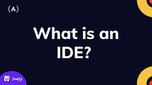
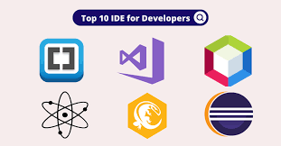
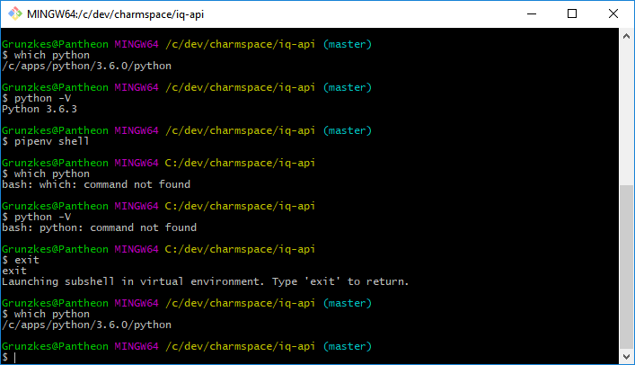
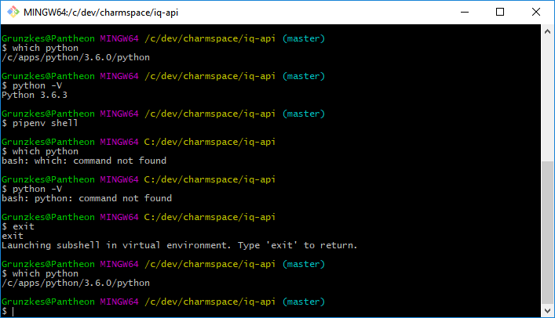
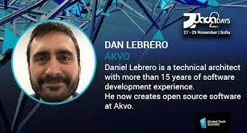

Definition Of Efficiency
Efficient means:- achieving maximum productivity with minimum wasted efford or expense.
As a Software Developer, being efficient means being able to to things very fast.
"Efficiency is doing things right; effectiveness is doing the right things", by Peter Drucker
Being efficient is doing things fast but in a proper way. Hence being efficient gives you time to be effective.
WHAT MAKES US NOT EFFICIENT
Not being able to FOCUS
It is very important to be able to Focus and maintain Focus as a developer.
Impact of interruptions
Studies shows that everytime a person interrupted, it takes 10 minutes to 20 minutes to go back to the level of focus they were in before interrupted. It is important to minimise interruptions as possible
Two types of interruptions

Controlled
It can be notifications from the phone, email notifications on the laptop
Not Controlled
They can be from Team mates or co-workers
Habits of Effective Developers
1a
- Disable all notifications on your screen, eg emails
- Wear big head phones
- Doing peer programming
- Get more sleep and less coffee
- Do one thing at the time
Working with a team mate or buddy, if an interruption occur, on can handle it and the other one can remain focused. Peer programming also help with keeping descipline and holding each other accountable.
When doing many tasks at one time, the quality of work produced reduces.
1b
- Master your IDE 
- Master its functionality
- Master its shortcuts
Intergrated Development Environment. It is a Software Application that helps programmers develop Software efficiently, eg Visual Studio
Watch video's and follow blogs of people using it
1b
Learn the power of Bash or Command Line Interface
 

Command Line Interface is a user interface in which the user interacts with the computer through lines of text instead of images.
1c
Never Stop learning
As a developer, you must never stop learning
Always put an hour or so, aside to learn new things, or implement what you have learnt.
References
Daniel Lebrero, Software Developer at Akvo Company
Lecture on Being an Efficient Developer